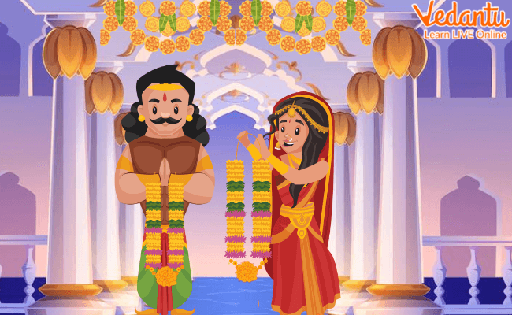

Mahabharata is a major Hindu Mythological Sanskrit epic. This great epic narrates the great war between the Kauravas and Pandavas.
It is a philosophical and devotional story that has many inspiring characters and chapters. Keep reading to know the Mahabharat story in short. It is the largest single literary work in existence.Originally composed in the ancient language of Sanskrit sometime between 400 BC and 400 AD, it is set in a legendary era thought to correspond to the period of Indian culture and history in approximately the tenth century BC.The original “author” was Vyasa who tried to tell about the Great War between the Pandavas and the Kauravas - cousins who claimed to be the rightful rulers of a kingdom.The background to get to where the epic starts is very confusing (in medias res). I’ll present the background a bit here just to lay the groundwork.
The story of this great Hindu mythology starts with King Shantanu of the Kuru dynasty, who ruled Hastinapur. He married Goddess Ganga and had a son called Bhishma who is one of the most prominent characters of Mahabharata. Ganga left the king and his son to fulfil her holy duties. Shantanu married Satyavati after Ganga left him. He had two sons with her. Vichitravirya, who was his eldest son from Satyavati became the king after Shantanu. He had three sons named Dhritarashtra, Pandu, and Vidur. Dhritarashtra was his eldest son but he was blind so Pandu became the king. Dhritarashtra was married to the princess of Gandhar named Gandhari. He had a hundred sons and a daughter with her. His hundred sons were called the Kauravas. Pandu married Kunti and Madri. He had five sons with the blessings of five different Gods. His sons were called Pandavs. Their names were Yudhishthira, Bhima, Arjuna, Nakula and Sahadeva. It was unknown to everyone that Kunti was already an unwed mother to a son named Karna.Throughout their lives and the terrible Great War, there were examples of the ethical gaps between men which were never resolved. In the aftermath of the war, Yudhishthira alone was terribly troubled, but his sense of the war's wrongfulness persisted to the end of the text. This was in spite of the fact that everyone else, from his wife to Krishna, told him the war was right; even the dying patriarch, Bhishma, lectured him at length on all aspects of the Good Law (the Duties and Responsibilities of Kings).
Pandu and his wife Madri died in the forest. Kunti returned to the kingdom with her five sons but Kauravas, and Pandavas never got along. Kauravs always tried to kill Pandavs but failed every time.One of their conspiracies was successful, after which the Pandavas and their mother had to go into hiding in forests. Arjun married princess Draupadi during this period.After that when they came back to Hastinapur, they were again exiled to the forest for thirteen years because Yudhishthir lost everything to the Kauravas in a game of dice. When they returned after their exile, the eldest son of Dhritarashtra, Duryodhana refused to give back the kingdom to Pandavas. Pandavas wanted their kingdom back and the stage was set for the greatest battle, despite efforts by Lord Krishna to bring peace. There was a great conversation between Arjun and Krishna related to “Dharma” and "Karma", which is mentioned in Bhagwat Geeta. The war went on for 18 days. At the end of the war, the Pandavas defeated the Kauravas.
Yudhishthir was crowned the King.In the years that followed the Great War, the only survivors on the part of the Kauravas, Duryodhana's parents, King Dhritarashtra and his queen, Gandhari lived a life of asceticism in a forest retreat and died with yogic calm in a forest fire. Kunti, the mother of the Pandavas was with them too. Krishna departed from this earth thirty-six years after the Great War. When they learned of this, the Pandavas believed it was time for them to leave this world too and they embarked upon the 'Great Journey,' which involved walking north toward the polar mountain that is toward the heavenly worlds, until one's body dropped dead. One by one, beginning with Draupadi, the Pandavas died along the way until Yudhishthira was left alone with a dog that had accompanied him from the start. Yudhishthira made it to the gates of heaven and there refused the order to drive the dog back, at which point the dog was revealed to be an incarnate form of the God Dharma (the God who was Yudhishthira's actual, physical father), who was there to test Yudhishthira's virtue. Once in heaven Yudhishthira faced one final test of his virtue: He saw only the Dhartarashtra Clan in heaven, and he was told that his brothers were in hell. He insisted on joining his brothers in hell, if that were the case! It was then revealed that they were really in heaven, that this illusion had been one final test for him.
The great Hindu epic Mahabharata teaches us the lesson that good is always victorious against evil. The moral of Mahabharata is to live in the right and truthful way. We should always fight for our rights as Pandavas fought for the rights and privileges that the Kauravs had taken from them by false means.In essence, the epic story represents an extended exploration of the responsibilities set forth by the code of dharma. In addition to recounting a heroic tale, the Mahabharata contains a collection of writings on a broad spectrum of human learning, including ethics, law, philosophy, history, geography, genealogy, and religion. It also features a number of legends, moral stories, and local tales all woven into an elaborate narrative.